PRM393 · Lab 3 · Flutter + Firebase
Attendo
App điểm danh bằng mã QR
Giảng viên mở mã trên điện thoại hoặc laptop, sinh viên quét hoặc gõ 6 số. Bài Lab 3: app Flutter theo thiết kế Lab 2, nối 6 dịch vụ Firebase, test và review bằng AI.
Lab 2
Bài toán và persona
Gọi tên mất thời gian
Lớp 35 em, gọi từng tên rồi bấm trên FAP: vài phút đầu giờ mỗi buổi.
Quên chốt, sai một em
Không có nhắc nhở; sửa một buổi đã chốt phải nhờ giáo vụ.
Biết quá ngưỡng thì đã muộn
Sinh viên chỉ biết mình sắp cấm thi khi đã vắng quá 20%.
Persona chính (Lab 2)
P-01 Thầy Minh Quân, dạy 3 đến 4 slot mỗi ngày: muốn chốt điểm danh trong vài giây rồi dạy tiếp, và biết sớm em nào vắng nhiều.
Tiêu chí thành công Lab 2
TC-1: mở app tới chốt một slot ≤ 20 giây khi lớp đã quét xong. duration_sec của attendance_close chỉ đo đoạn mở mã → chốt (gồm lúc chờ quét); đoạn mở app → mở mã chưa đo.
Thiết kế
Figma Lab 2 và app
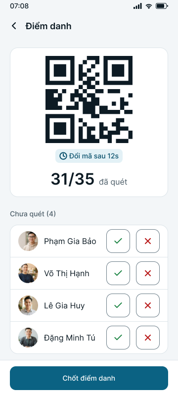

GV-102 Phiên điểm danh
D-L3-08: chu kỳ đổi mã lấy từ Remote Config. D-T-08: mở trên hai máy thì một máy giữ quyền đổi mã.
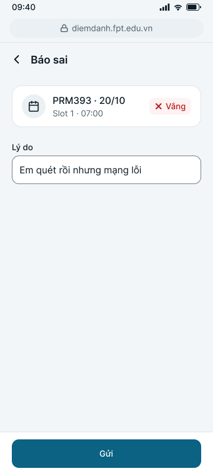

SV-102 Báo sai
D-T-12: chọn một trong 5 lý do, ô Ghi thêm tuỳ chọn, để Analytics đếm được lý do hay gặp.
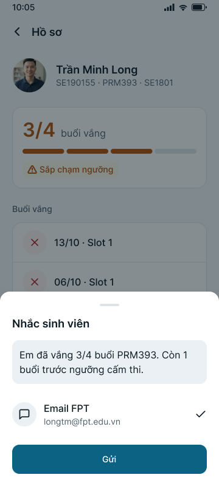

GV-OV3 Nhắc sinh viên
D-F-05: thêm nút Gợi ý AI (phần Final).
Cả hệ thống: màu Bản vẽ thay màu Lab 2 (D-T-09), font Onest (D-T-13), icon Lucide (D-U-15). Toàn bộ khác biệt và lý do: docs/design-traceability.md.
Kiến trúc
MVVM với Riverpod
Token → theme, component → widget
Design system trong code
1 · Token
tokens.dart: AppPalette (12 bảng màu, sáng và tối), AppSpace, AppRadius, AppFont.
2 · Theme
AppTheme.light/dark(palette) dựng ColorScheme, TextTheme. Màn hình đọc màu qua Theme, không viết mã màu.
3 · Ngoài Flutter
gen_css.mjs sinh CSS cho extension từ cùng token.
| Component Figma | Widget | Trạng thái |
|---|---|---|
| Button | AppButton | primary, outline, ghost, destructive; pressed, disabled, loading |
| Text field | AppTextField | focused, error, disabled, password |
| Slot card | SlotCard | sắp tới, đang diễn ra, chưa chốt, đã chốt |
| Stat card | StatTile | chỉ xem, bấm được, chưa có số |
| Status chip, badge | StatusChip, StatusBadge | có mặt, vắng; đã chốt, chưa chốt, lỗi |
| Empty, error state | EmptyState, ErrorState | có hoặc không nút; Thử lại |
| Sheet, snackbar | AppSheet, AppToast | có Hoàn tác |
Firebase · 1
Authentication
Máy chủ Firebase Auth cấp uid và ID token khi đăng nhập bằng email hoặc Google. App không lưu mật khẩu.
Lưu ở users/{uid}.role. Security Rules đọc request.auth; router chặn người vào sai cổng.
Sai email hay mật khẩu đều báo cùng một câu; email chưa xác nhận thì vào màn Xác nhận.
core/services/auth_service.dart, mobile/lib/router.dart
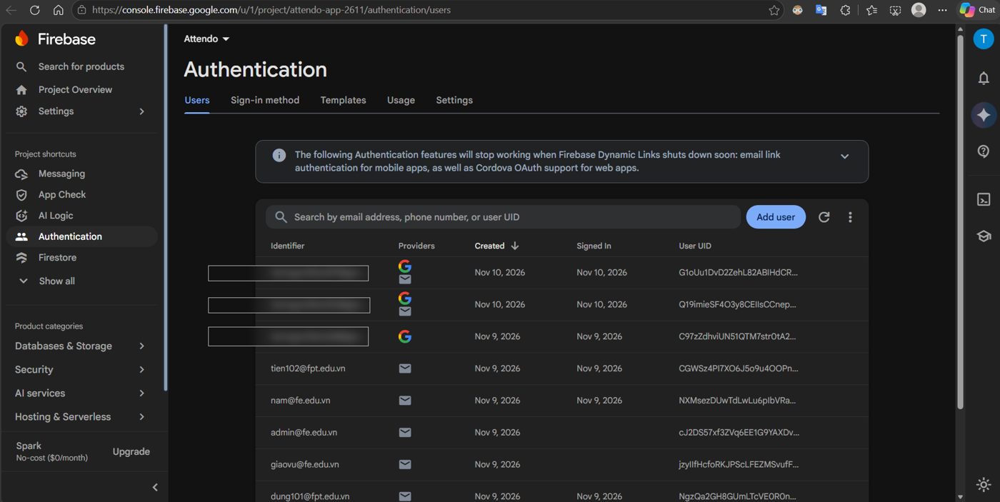
Firebase · 2
Cloud Firestore và Security Rules
| Collection | Ai ghi | Ai đọc |
|---|---|---|
classes · students | Giảng viên nhập file | Chủ lớp, giáo vụ |
slots/{id} có mã QR | Chủ lớp | Chủ lớp, giáo vụ. Sinh viên không |
slots/{id}/attendance | Sinh viên khi mã đúng, còn hạn | Chủ lớp, chính em đó |
requests báo sai | Sinh viên | Em đó, giảng viên lớp |
196 ca test Security Rules trên Emulator, chạy mỗi lần push.
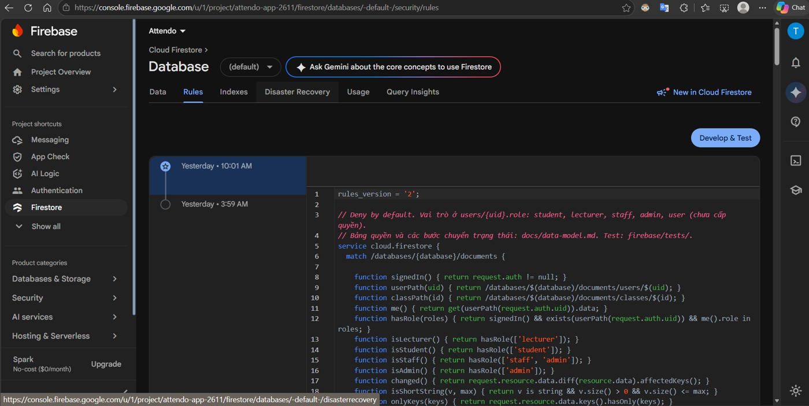
Khi lỗi: mất mạng lúc chốt thì lưu trên máy, hiện "Chưa gửi được" và nút Thử lại; Rules từ chối thì báo "Không có quyền truy cập".
Firebase · 3
Cloud Messaging (FCM)
Chuỗi định danh một lần cài app trên một máy, không phải người dùng. Cài lại là đổi.
Máy chủ FCM, qua getToken() trong messaging_service.dart.
SDK giữ trên máy; app ghi thêm users/{uid}/fcmTokens/{token}, chỉ chủ đọc.
tool/fcm/send.mjs: Admin SDK + service account, gọi FCM HTTP v1. Không có server riêng.
Đang mở: onMessage. Nền: onMessageOpenedApp. Đã tắt: getInitialMessage.
Chưa cho phép thông báo thì Khu demo hiện nút xin quyền; token đổi thì onTokenRefresh ghi lại.
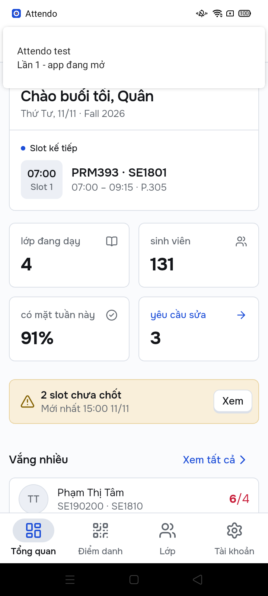
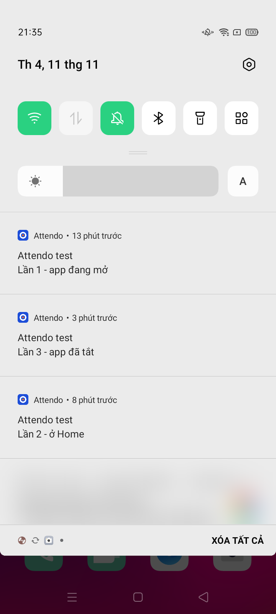
Điện thoại thật nhận được ở cả 3 trạng thái: đang mở, ở nền, đã tắt.
Firebase · 4
Analytics
| Sự kiện | Ghi ở ViewModel | Trả lời câu hỏi |
|---|---|---|
attendance_session_open | SessionViewModel | Slot nào được mở điểm danh |
attendance_close | SessionViewModel | Mở mã rồi có chốt không, mất bao lâu |
qr_scan (result) | ScanViewModel | Bao nhiêu lần quét lỗi, lỗi gì |
ai_request · ai_result_accepted | StudentProfileViewModel | Gợi ý AI có được dùng không |
Khi lỗi: ghi sự kiện hỏng thì bỏ qua, luồng chính vẫn chạy.
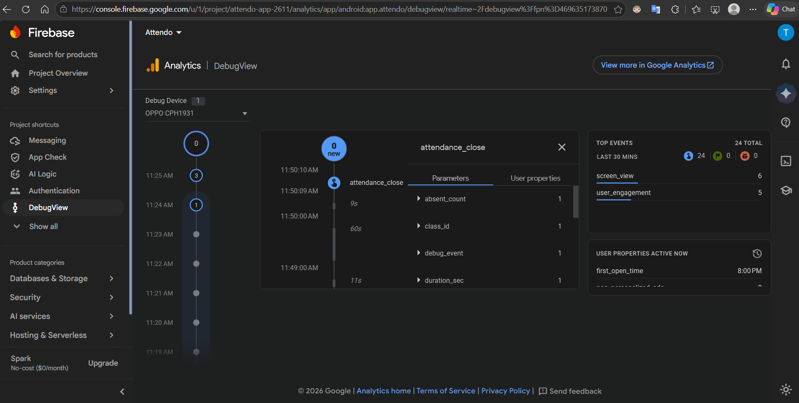
Firebase · 5
Crashlytics
Hai đường cùng lúc
App gửi crash cho Crashlytics như mọi app. Crashlytics không có API đọc cho client, nên app ghi thêm một bản tóm tắt vào crashReports; Rules chỉ cho admin đọc.
Test crash 11/11 21:49: web admin hiện ngay; ảnh console là lần chạy 09/11.
Khóa tuỳ chỉnh: role, term, last_error_where, để biết lỗi xảy ra ở bước nào.
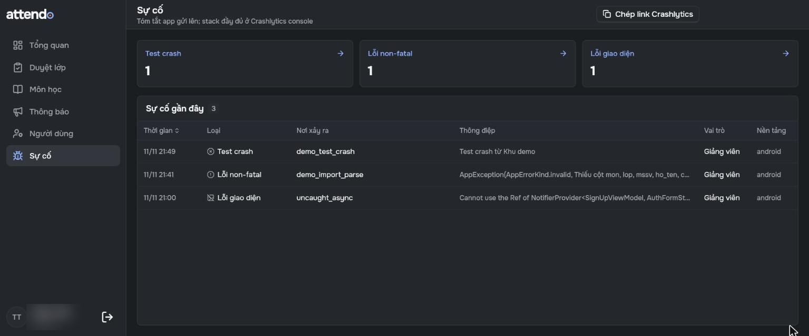
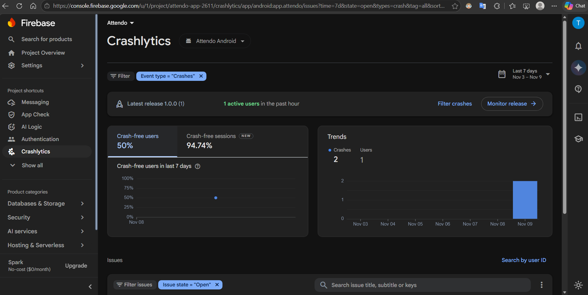
Firebase · 6
Remote Config
| Tham số | Mặc định | Dùng ở đâu |
|---|---|---|
qr_rotate_seconds | 12 | Chu kỳ đổi mã |
session_minutes | 5 | Mỗi lần mở mã kéo dài bao lâu |
absence_limit_percent | 20 | Ngưỡng vắng, dải vàng và đỏ |
ai_reminder_enabled | true | Tắt nút Gợi ý AI không cần cập nhật app |
report_cloud_upload | true | PDF lên Cloudinary hay chỉ lưu máy |
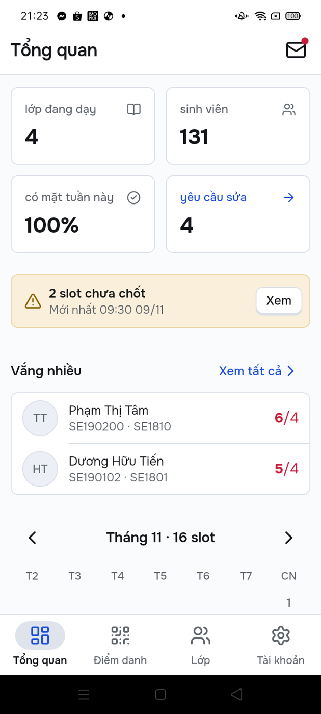
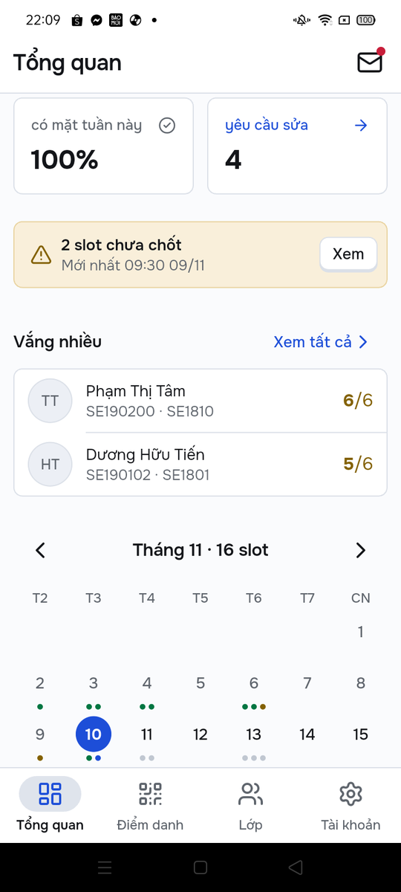
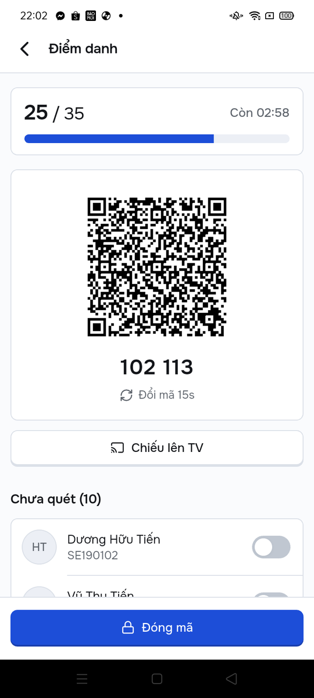
Điện thoại thật 10/11: đổi trên console 12 → 15 và 20 → 30, app đổi theo, không cài lại. 9 tham số đều có mặc định trong app.
Khi lỗi: không tải được thì dùng giá trị mặc định.
Lưu file · thay Cloud Storage
Cloudinary
1 · Tạo PDF trên máy
Chi tiết lớp → Xuất PDF: danh sách, số buổi vắng từng em.
2 · Tải lên
Preset unsigned của Cloudinary, thư mục riêng theo uid; thanh tiến độ, có nút chép link.
3 · Ghi metadata
reports/{id}: tên file, dung lượng, link. Rules chỉ nhận link đúng thư mục của người ghi.
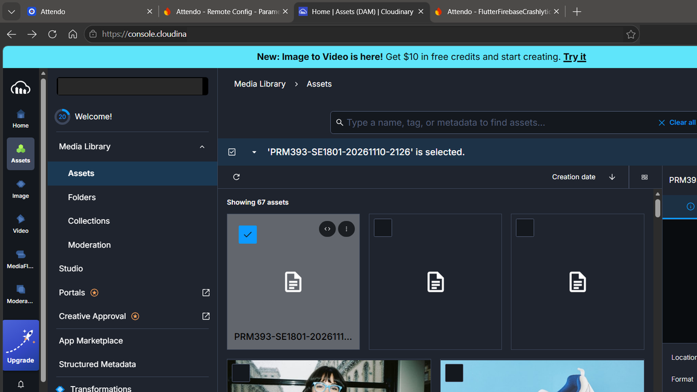
Vì sao: Cloud Storage cần gói Blaze, project dùng gói Spark. Không có API secret trong app (D-L3-18).
Khi lỗi: tải lên hỏng thì báo lỗi và ghi Crashlytics non-fatal; cờ report_cloud_upload tắt bước tải lên mà không cần cài lại app.
Kiểm thử
ARTEMIS và các lớp test
Kế hoạch ARTEMIS · docs/test-plan.md
- 17 ca trên điện thoại thật: TC-01 đến TC-16, TC-23; mỗi ca chạy 3 lần
- 5 nhánh lỗi, 4 tương tác Android gốc: chọn tài khoản Google, chọn file, quyền thông báo, quyền camera
- Assert trên giá trị agent đọc được (số đếm, chữ trên dải lỗi), không chỉ SUCCESS
Kết quả 11/11 · chạy một phần, 12 trên 17 ca, mỗi ca 1 lần 3 đạt 6 đạt giao diện 3 trượt
Đạt: TC-02, 03, 13. Sáu ca (TC-04, 05, 08, 11, 12, 14) giao diện đúng nhưng trượt bước kiểm log Analytics, vì chưa bật log Firebase chi tiết trên máy. TC-06, 15 trượt; TC-07 lỗi nạp dữ liệu. Chưa chạy: TC-01, 09, 10, 16, 23. Dừng vì hết ngân sách gọi model.
Rà soát mã
AI code review
| Mã | Loại | Phát hiện | Kết quả |
|---|---|---|---|
| CR-01 | Security | Sinh viên đọc được slot nên thấy mã QR | Nhận, đã sửa |
| CR-15 | Security | CodeRabbit: tự khai MSSV người khác để đọc lịch sử của họ | Nhận, đã sửa |
| CR-30 | Performance | CodeRabbit: indexOf trong vòng lặp có thể O(n²) | Bác, có số đo |
| CR-14 | Security | Giảng viên bất kỳ ghi vào lớp người khác | Nhận, đã sửa |
CodeRabbit · PR #28 · trích nguyên văn
Bind studentCode to the account; any user can claim another student's MSSV.
Major · Security · IDOR (CWE-639). Em nhận: thêm khoá studentCodes/{mssv} trong Rules, kèm test (CR-15).
Kết
Khó khăn và bài học
Bài học
- Lỗi thật chỉ lộ trên Firebase thật: chỉ mục sai thứ tự trường, App Check bắt buộc cho AI.
- Test Rules trước khi viết màn hình rẻ hơn sửa sau.
- Mỗi con số trên slide phải trỏ được về nơi nó chạy.
Giới hạn
- Không có server: gửi FCM bằng script, chưa tự động khi duyệt lớp.
- Web sinh viên chưa nhận thông báo đẩy.
- ARTEMIS mới chạy 12 trên 17 ca, mỗi ca 1 lần: model miễn phí giới hạn 20 lượt mỗi ngày, gói trả phí hết ngân sách.
Công cụ AI đã dùng
- Claude Code: code, test, tài liệu, dựng slide này
- CodeRabbit: review PR #28 đến #30
- Google ARTEMIS: test E2E trên điện thoại
- Gemini: tính năng Gợi ý lời nhắc
Từng phiên ghi ở docs/ai-log.md.
Phụ lục
Mã QR đổi mỗi 12 giây
Điện thoại và laptop cùng mở: máy mở trước đổi mã, máy kia chỉ hiện. Rời màn thì nhả quyền ngay.
Phụ lục
Bảng bằng chứng
| Dịch vụ | Bằng chứng | Loại |
|---|---|---|
| Authentication, Firestore | 196 ca Rules, 33 ca E2E | CI |
| Mã QR, TV, extension | T1 trọn một buổi, extension 34/34, trễ < 1,1 s | Firebase thật |
| Cloud Messaging | 3 trạng thái app | Điện thoại thật |
| Crashlytics | console + web admin, tab Keys | Firebase thật |
| Remote Config, AI Logic | 9 tham số, đổi trên console, app đổi theo, Gợi ý AI chạy | Firebase thật |
| Analytics | 13 sự kiện; 13/13 có ảnh DebugView | Firebase thật |